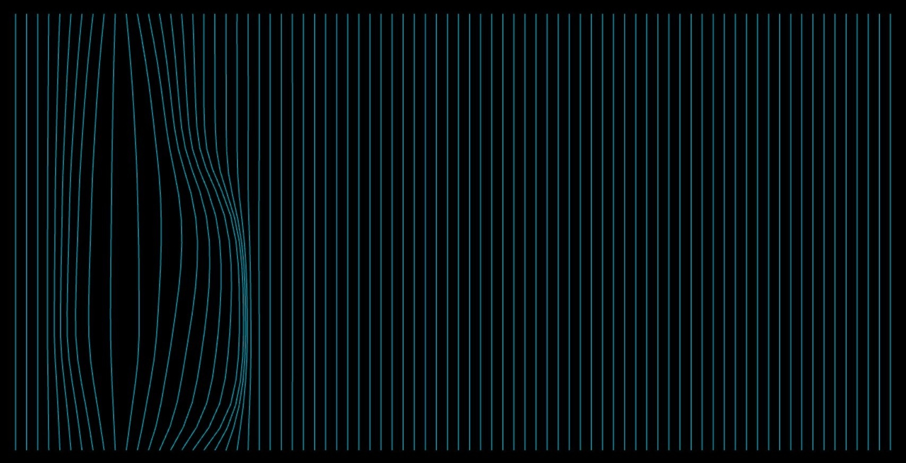
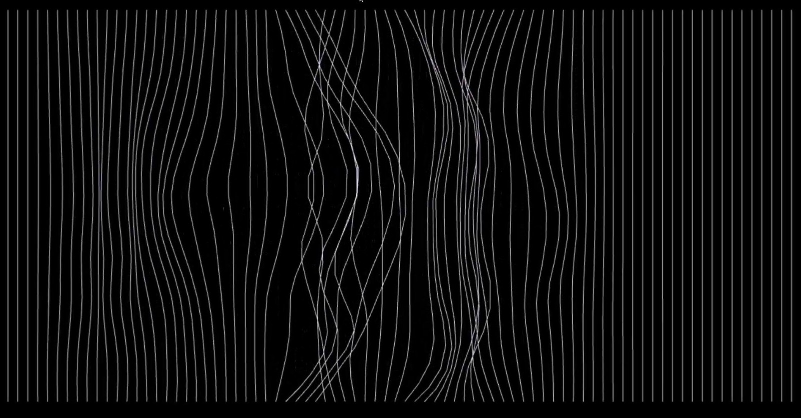
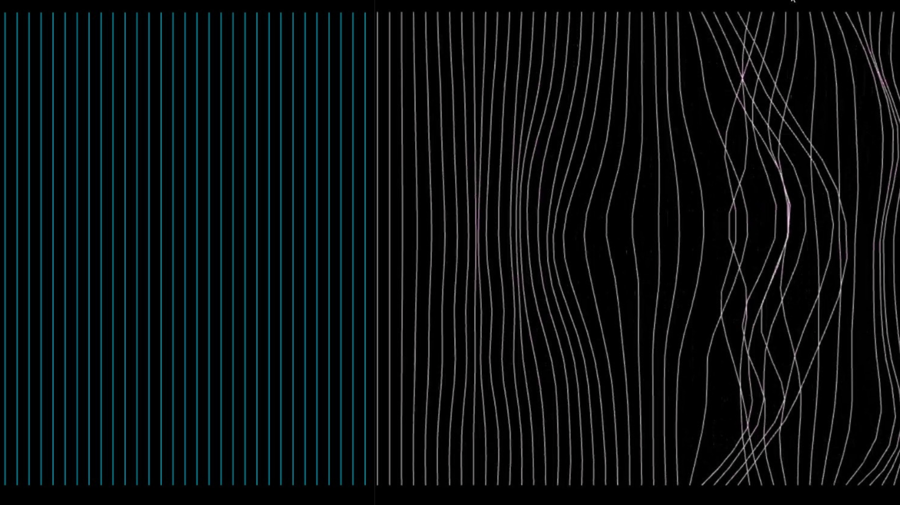

Interact
Planning / Programming
Touch Designer

作品透過攝影機即時偵測觀眾的手部動作， 並將動態資訊轉化為生成式影像， 讓參與者能直接影響畫面中的線條流動與空間變化

系統會依據場域中的互動狀態改變畫面色調， 當單人出現時呈現冷色系氛圍， 而雙人同時互動時則轉化為暖色調， 象徵人際連結所帶來的情感變化

透過線條延伸、扭曲與晃動效果， 將觀眾之間的距離感轉化為視覺語言， 讓抽象的人際關係能以動態形式被感知與觀看
此作品以「界線」作為核心概念， 嘗試探討人與人之間看不見的距離感與情感連結。 在實作過程中，我們透過 TouchDesigner 建立即時互動系統， 並結合攝影機偵測、生成式線條與色彩變化， 讓觀眾能透過自身行為改變整體畫面狀態。 製作期間，我主要參與互動邏輯規劃與視覺效果調整， 並不斷測試不同感測與畫面回饋之間的平衡， 希望讓觀眾在互動過程中， 感受到「跨越界線」所帶來的連結與變化。